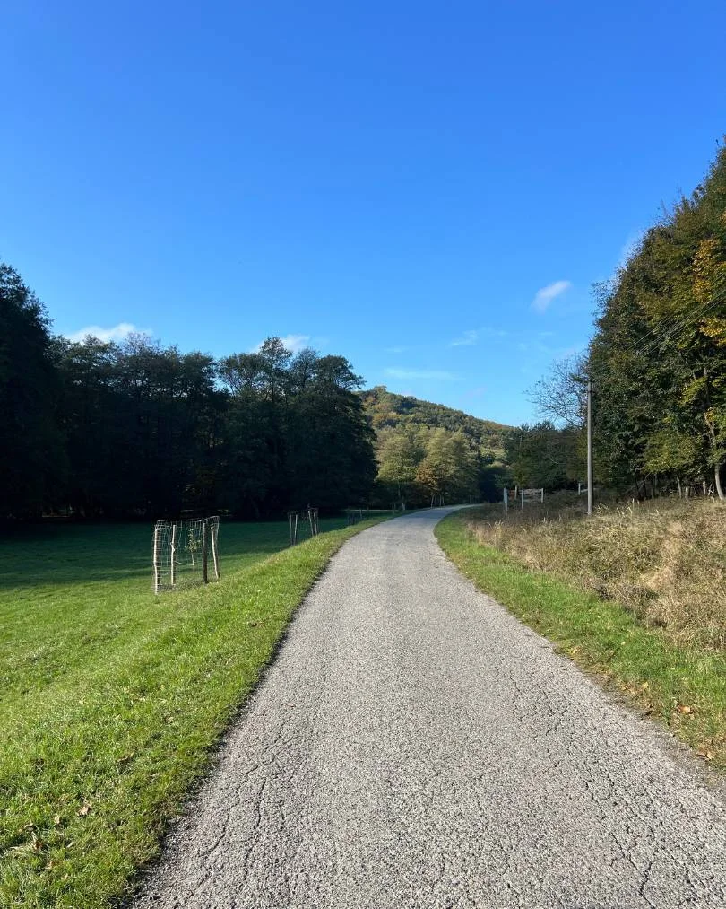
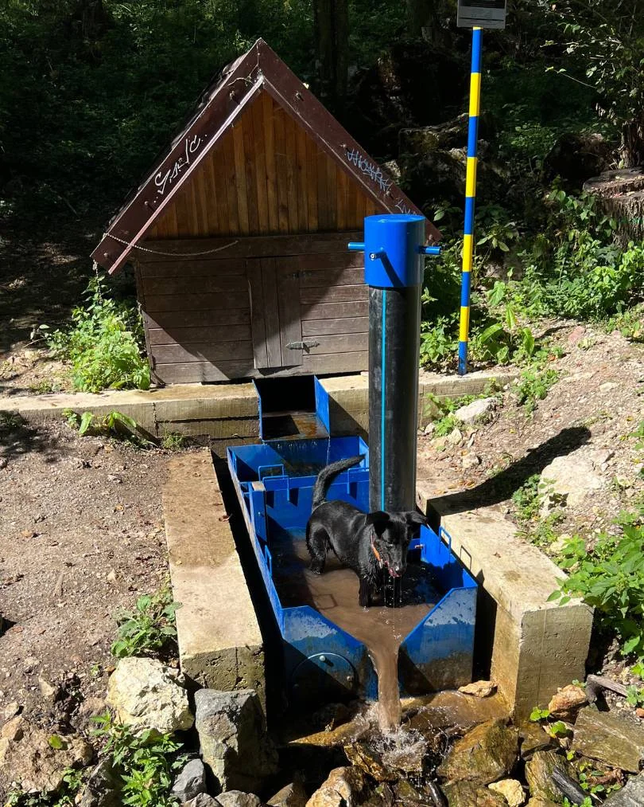
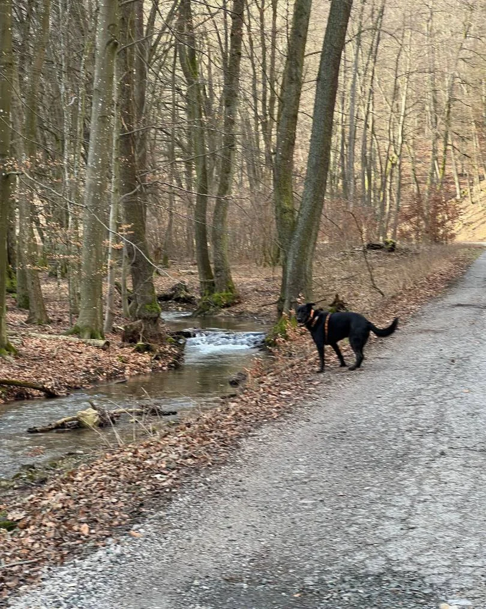
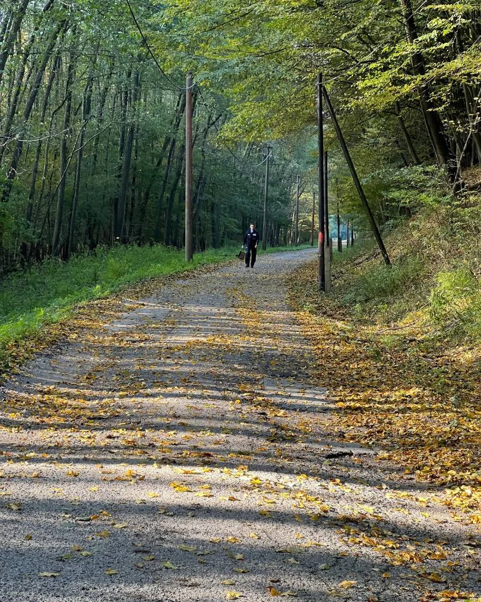
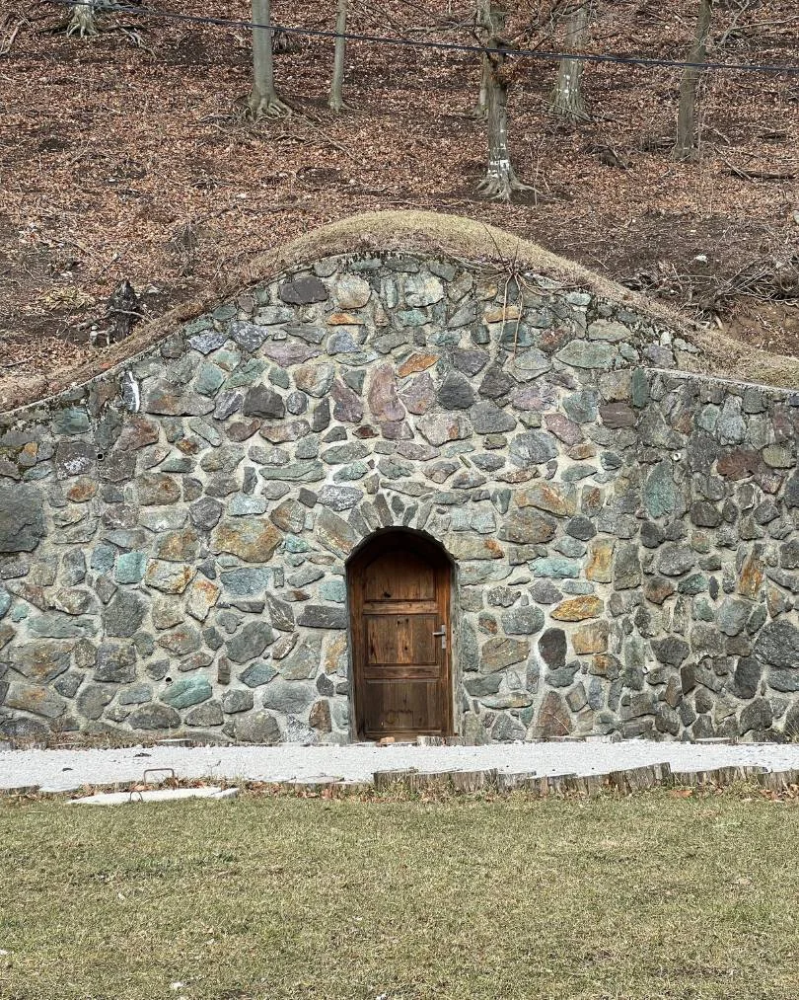
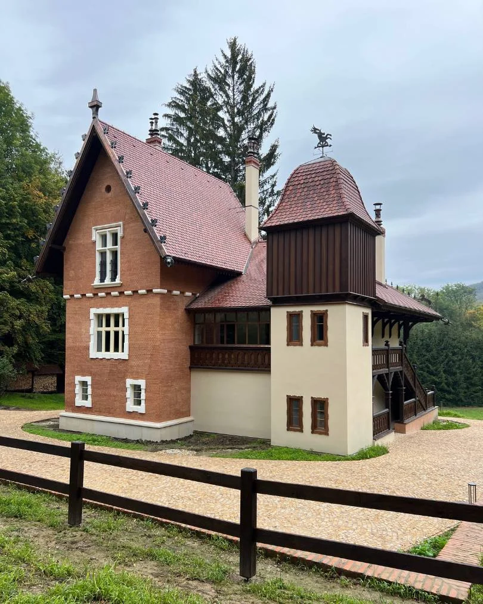
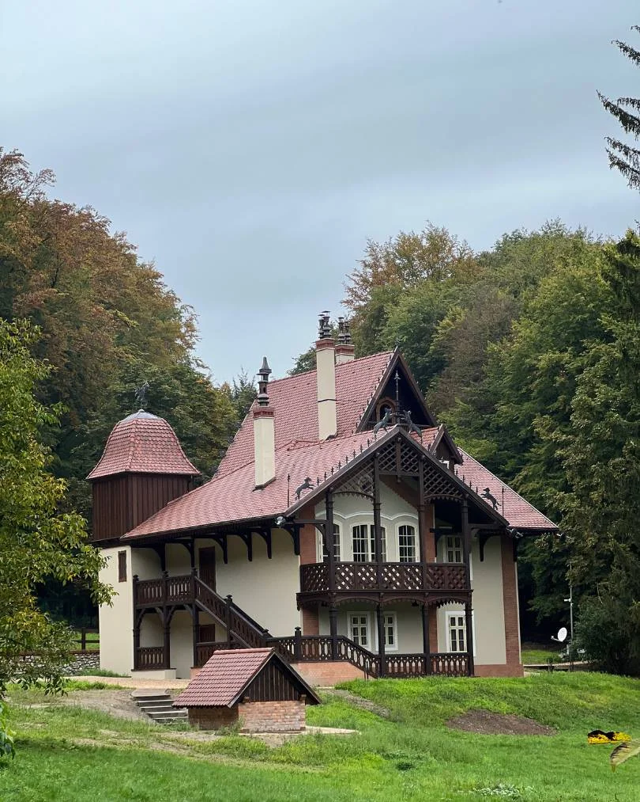
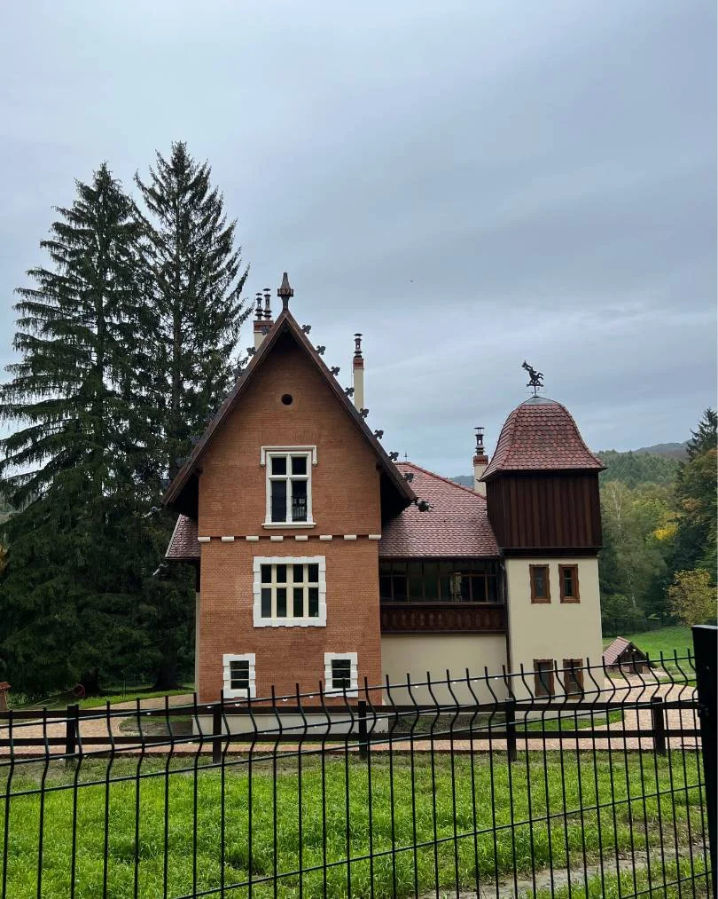

Nenáročný 10 km okruh po asfaltovej ceste v krásnom lesnom prostredí so žblnkotajúcim potôčikom vždy po ruke.

Veľkou výhodou tohoto okruhu je asfalt najmä pri upršanom počasí. Naopak, cez letné horúčavy je tu dostatok tieňa :)







Bola si už na Majdáne?